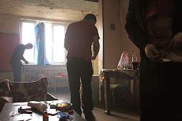
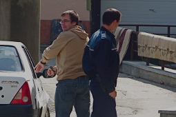

THE BLACK SEA DIVING DEEP INTO STORIES
WELCOME TO THE BLACK SEA
A new web-site showcasing in-depth investigations and recording the color of daily life in southeast Europe on a multimedia platform.PHOTO STORY
PHOTOGRAPH BY PETRUT CALINESCU
Joy and beauty in the ruins - a photo-journey through the beach resorts of Abkhazia,
the frozen conflict neighboring the Winter Olympics in Sochi
SEE MORE

Injectable home-made drug
Krokodil is savaging heroin-
starved addicts
SEE MORE
Fake executions, forced
confessions, prisoner family
persecution: law enforcement
Transnistria-style
SEE MORE

Remote village becomes child
porn studio for global market -
without the knowledge of the
victims
SEE MORE
Culture clash in Moldova - Orthodox fundamentalism rallies to attack the west
As Moldova begins the road to EU integration, a top religious fundamentalist talks violence against the rise of western values SEE MORE
Ukraine oligarch links to off-shore cash haven revealed
Billionaire divorce exposes money-laundering ties between the Black Sea and Caribbean SEE MORE
Billion-Euro Rosia Montana mine project rips communities apart
As the fate of Romania's gold mining project in Transylvania remains uncertain, a report from a village where families are at war SEE MORE
We are a network of experienced international journalists, coders, designers and photographers who carry out in-depth investigations and multimedia projects on subjects of relevance to the Black Sea region
We undertake in-depth journalism so we don't publish often. But you can be the first to read our latest stories, by subscribing to our newsletter here . This is a one-time message.
If you like our content please forward this to your friends and help us build a lifeboat for journalism in the Black Sea Region.